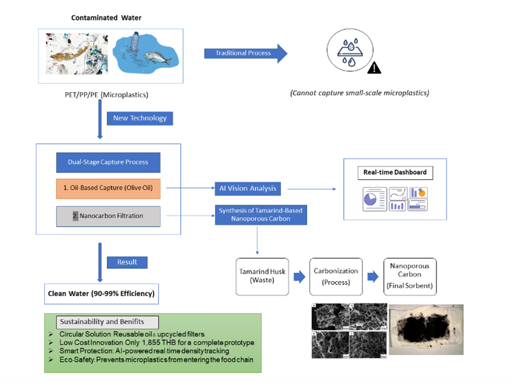
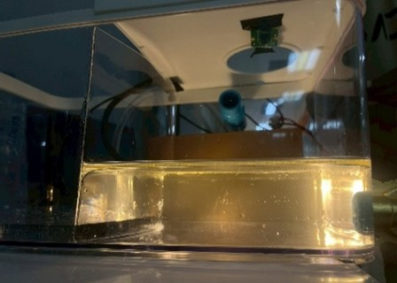

This research aimed to develop a prototype system for detecting and capturing microplastics in aquatic environments by utilizing olive oil as a medium for microplastic extraction, combined with nanoporous carbon sorbents derived from agricultural waste to enhance the adsorption of small particles. In addition, AI Vision technology was applied for real-time analysis and monitoring of microplastic contamination.
The experimental procedure involved preparing water samples contaminated with polypropylene-based microplastics to simulate real environmental conditions, including general sediment conditions and high organic matter conditions. The samples were then pumped through the prototype system under a constant flow rate. Water samples were collected before and after treatment to evaluate capture efficiency using microscopic observation and AI Vision based on light scattering in the oil layer.
The results showed that olive oil could capture microplastics sized 0.3-5 mm with an efficiency of approximately 92-99% and recover particles sized 1-5 mm under high organic matter conditions with an efficiency of 90-99%. However, the efficiency decreased for particles smaller than 1 mm. This limitation was improved by using nanoporous carbon sorbents with nanoscale porous structures.
Furthermore, the AI Vision system processed the data and displayed the results on a real-time dashboard to support risk assessment and decision-making in water resource management. The developed system demonstrates strong potential for application in community areas, aquaculture facilities, and industrial sectors to reduce microplastic pollution before entering aquatic ecosystems and to promote sustainable environmental management in the long term.